The explorer is a Shiny app over a merged schema built by
merge_sources(), so it needs the PostgreSQL server that
holds that schema to be running. It answers the questions that come
after a build: who is in the cohort, how the sources differ, what one
patient’s stay looks like, which concepts were extracted, and whether
the merged tables still agree with the per-source ones. The screenshots
in this article are the MIMIC-IV demo cohort built in
vignette("rendehR").
Starting the app
run_explorer("rendehr", db_name = "rendehr_demo")run_explorer() takes the merged schema and the same
connection details as the rest of the package: an active project
(ehr_use_config()), a config_path, or
creds. It reads the cohort tables once at start, then
queries the database live for patient time series, concept summaries and
checks.
| Argument | Use |
|---|---|
schema |
merged schema to show, e.g. "rendehr"
|
db_name, config_path,
creds
|
which database, and how to connect |
raw_dirs |
named raw-data folders per source; enables the raw-value check on the Verify tab |
sci |
study pages from explorer_sci_data() (see Study pages) |
data |
a bundle from explorer_data() instead of loading
one |
cache_dir |
keep the bundle between runs (see below) |
host, port,
launch.browser
|
where the app listens; 127.0.0.1 by default |
For scripts and tests, explorer_data() loads the same
bundle and explorer_app() returns the app object without
running it:
data <- explorer_data("rendehr", raw_dirs = c(mimic_iv_demo = "physionet_data/mimic_iv_demo"))
app <- explorer_app(data, live = TRUE)
shiny::runApp(app, port = 3838)On full data, reading the merged tables takes a while at every start.
cache_dir keeps the bundle in a file that is reused until
any table in the database is rebuilt, or the package is reinstalled. The
file holds individual-level data, so it is written with owner-only
permissions; keep the directory private.
The app shows individual-level data. Keep it on
127.0.0.1 or behind your own authentication, use it under
each source’s data use agreement, and do not deploy it publicly or share
screenshots of real patients.
Conventions used on every page
-
Cohort admission: an admission flagged as a cohort
member in
cohort_info; the patient’s other admissions are kept as context. - Index admission: a patient’s first cohort admission. Patient-level views (the age pyramid, survival, “Count: Patients”) use it.
- Clock: hours since hospital admission, unless a view says otherwise.
-
Small cells: counts of 1-9 are shown as
<10, together with any percentage or complement from which they could be recovered. The switch “Hide counts below 10” turns this off for your own screen only. - Dates: shifted per patient in MIMIC; eICU-CRD has offsets only, so calendar views fall back to hours.
- Help and links: the question mark at the right of the top bar explains the open page and links to its section here; the link icon gives a URL that reopens the page with the same Cohort Explorer filters and tab settings. A link holds no data and never re-runs an action.
- Plots are interactive (zoom, hover, toggle a series in the legend); the camera button saves the plot as SVG.
Overview
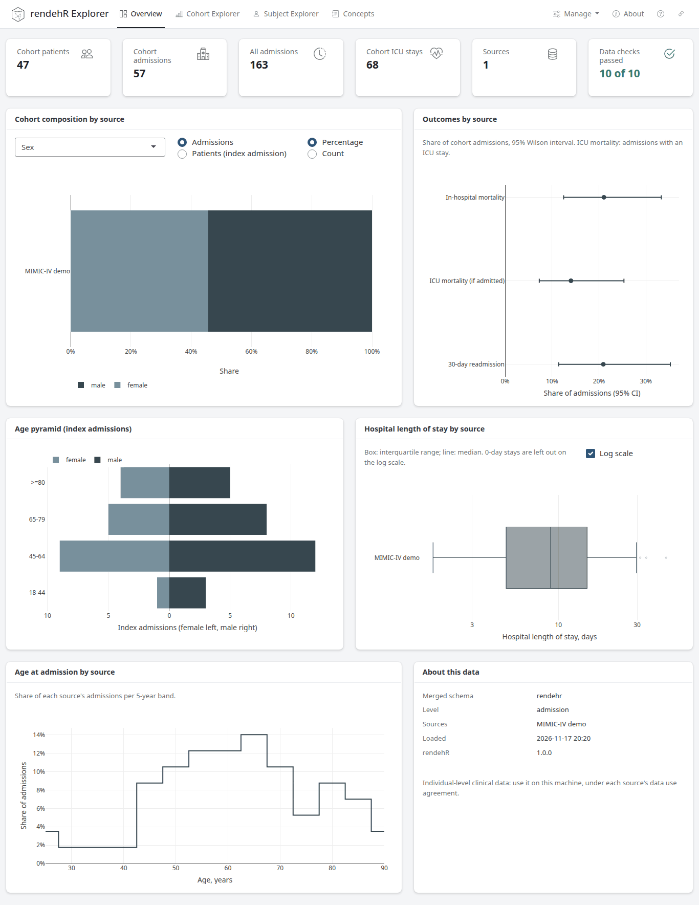
plot of chunk overview
The first page describes the whole cohort without filters.
- Headline boxes: cohort patients, cohort admissions, all admissions of these patients (context included), cohort ICU stays, sources, and how many structural data checks passed. A box turns amber when a check fails; open Manage > Data checks for the detail.
- Cohort composition by source: one stacked bar per source for any grouping variable (sex, admission type, age group, outcome, …), as admissions or index admissions, in percent or counts.
- Outcomes by source: in-hospital mortality, ICU mortality (among admissions with an ICU stay) and 30-day readmission, with 95% Wilson intervals.
- Age pyramid of index admissions, hospital length of stay per source (box plot, log scale optional) and age at admission in 5-year bands.
- About this data: the merged schema, its level (admission or ICU), the sources, when the bundle was loaded and the package version.
Use it to spot a source that looks different before analysing anything: a mortality rate far from the others or a length-of-stay distribution shifted by a unit error is visible here first.
Cohort Explorer
The analysis page. The sidebar filters the cohort; every tab on the right is computed from the same filtered rows, so a table and a plot shown side by side always describe the same admissions.
Filters. The sidebar starts with the number of
selected admissions and the counting unit: Admissions counts
every cohort admission, Patients keeps one index admission per
patient (chosen before filtering, so a patient whose index admission is
filtered out drops out). Filters are grouped by source, patient (sex,
age, race, insurance, language), admission and outcome; each group is an
accordion that can be collapsed. Download selection (CSV)
writes the filtered rows with every variable the explorer knows, and
Show R code gives the code that reproduces the selection from
explorer_data() with dplyr::filter(), so a
selection made here can move into an analysis script.
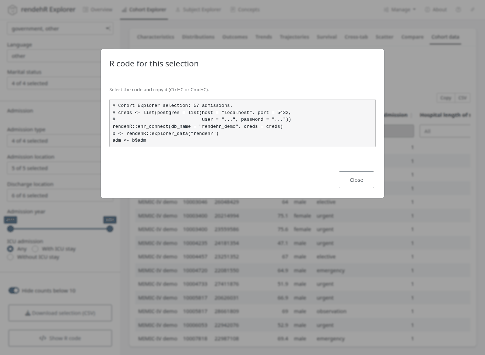
plot of chunk cohort-code
Characteristics
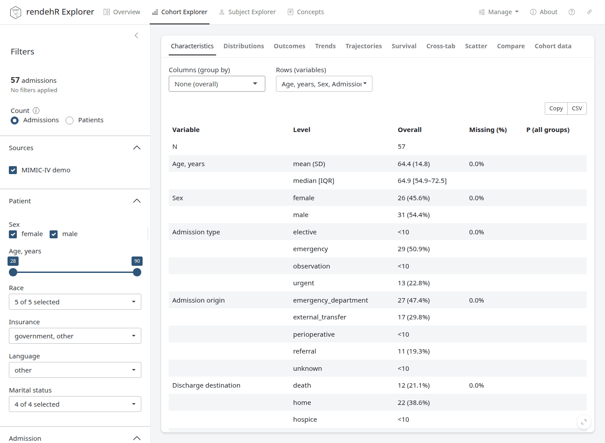
plot of chunk cohort-characteristics
A “Table 1”: choose the grouping (Columns) and the variables (Rows). Continuous variables show mean (SD) and median [IQR]; categorical ones show counts and percentages; the Missing (%) column reports missingness per variable. With a grouping, the table adds a p-value across all groups and a standardised mean difference (SMD) between the two groups chosen under SMD: group 1 / group 2. An absolute SMD above 0.1 is the usual threshold for an imbalance worth reporting. Copy and CSV export the table as shown, masking included.
Distributions
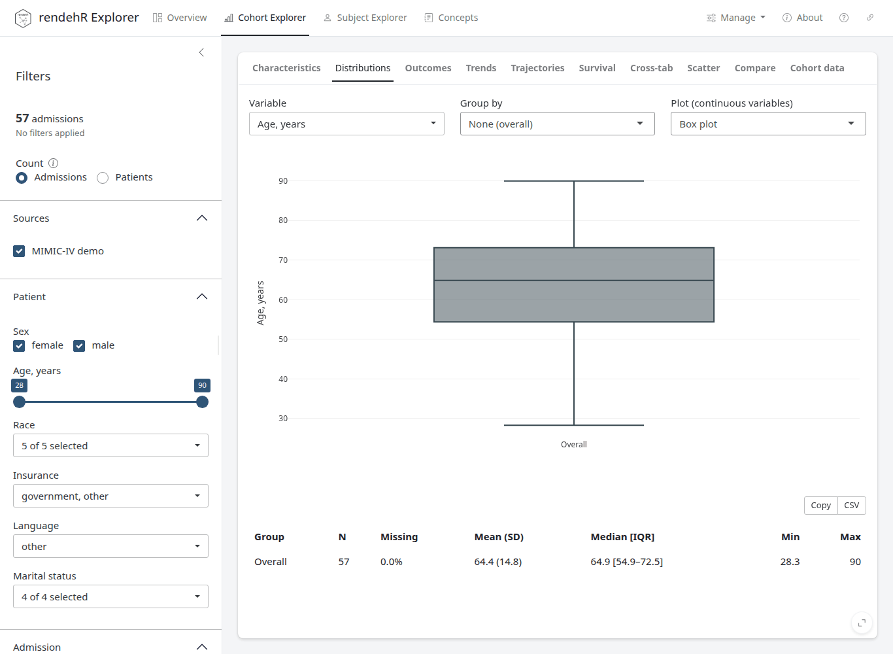
plot of chunk cohort-distributions
One variable, optionally split by a group. Continuous variables can be drawn as a box plot, violin, histogram or cumulative distribution (ECDF); categorical variables as bars. The summary table below gives n, missing, mean, SD and quantiles per group. The ECDF is the quickest way to compare whole distributions across sources, for example to see that one source records a laboratory value in other units.
Outcomes
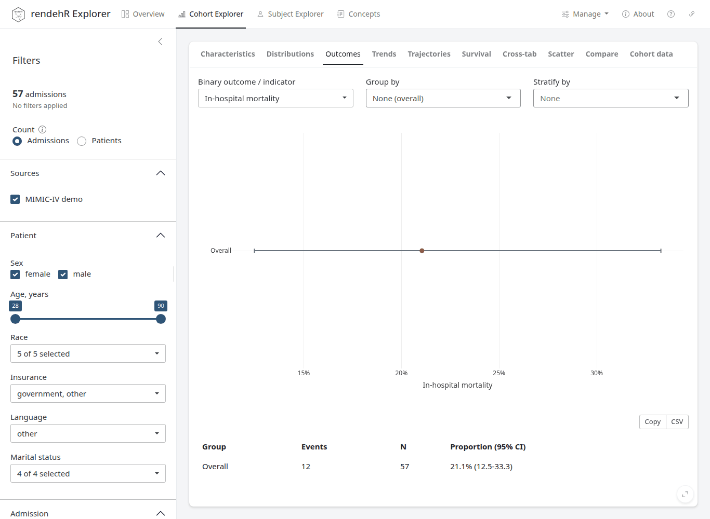
plot of chunk cohort-outcomes
The rate of any binary variable (mortality, readmission, ICU admission, an exposure flag) per group, with 95% Wilson intervals, optionally stratified by a second variable. The table lists numerator, denominator and interval for every cell.
Trends
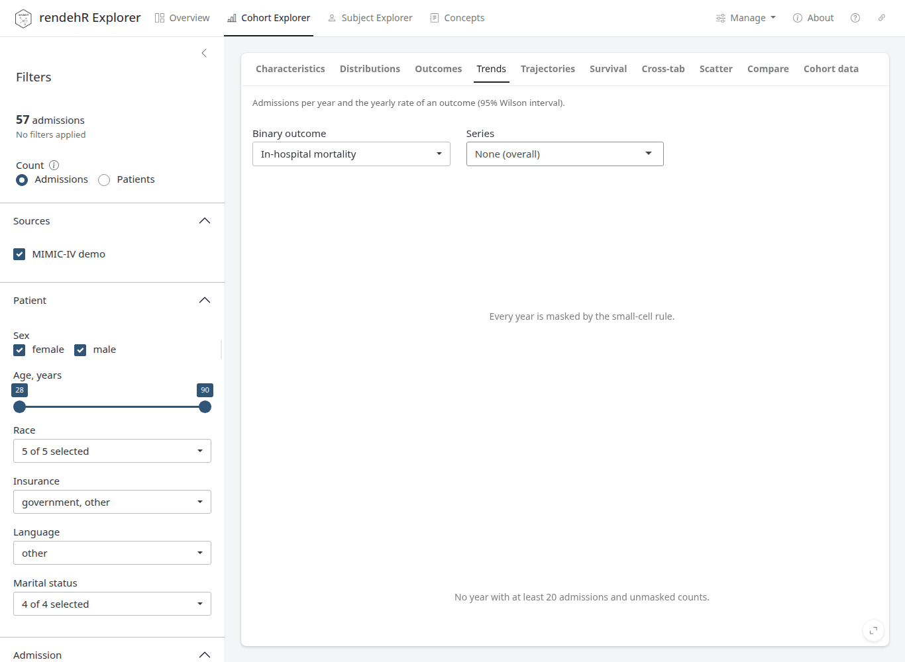
plot of chunk cohort-trends
Admissions per year, optionally as series by a group (counts or share of the year), and the yearly rate of a binary outcome with its 95% interval. Years come from the shifted admission dates, so they are comparable within a source but not calendar years; eICU-CRD has a release year only.
Trajectories
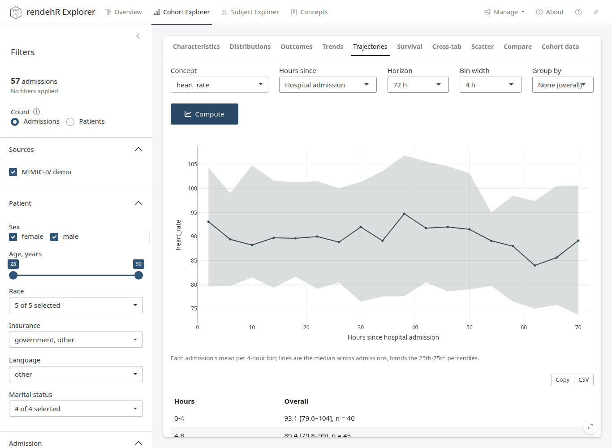
plot of chunk cohort-trajectories
The course of one time-series concept over the filtered cohort: each admission’s mean per time bin (1 to 24 hours) within a horizon of 24 hours to 7 days, on the hospital or ICU clock, summarised as the median with the 25th-75th percentile band per group. The table below gives the same numbers with the admissions per bin. Bins with fewer than 10 admissions are left out while masking is on. Press Compute after choosing the concept; the query runs once per setting.
Survival
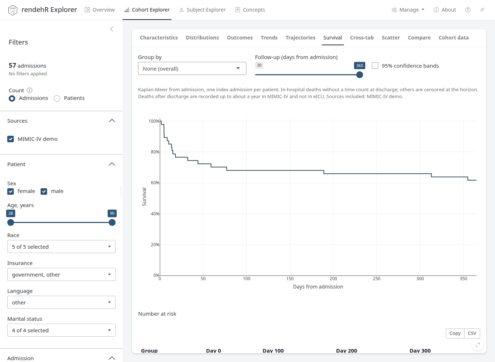
plot of chunk cohort-survival
Kaplan-Meier survival from hospital admission, one index admission per patient, by group, with optional 95% confidence bands and a follow-up horizon of 30 to 365 days. In-hospital deaths without a recorded time count at discharge; other patients are censored at the horizon. MIMIC-IV records deaths after discharge for about a year, eICU-CRD only in hospital, so the note under the controls lists the sources the curve can use. The number-at-risk table and a summary per group (n, events, median survival, log-rank p-value) follow the plot.
Cross-tab
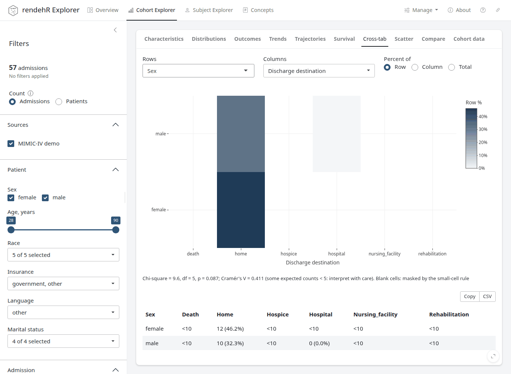
plot of chunk cohort-crosstab
Two categorical variables against each other, with row, column or total percentages, a stacked bar chart, and a chi-squared test with Cramér’s V; the note warns when some expected counts are below 5.
Scatter
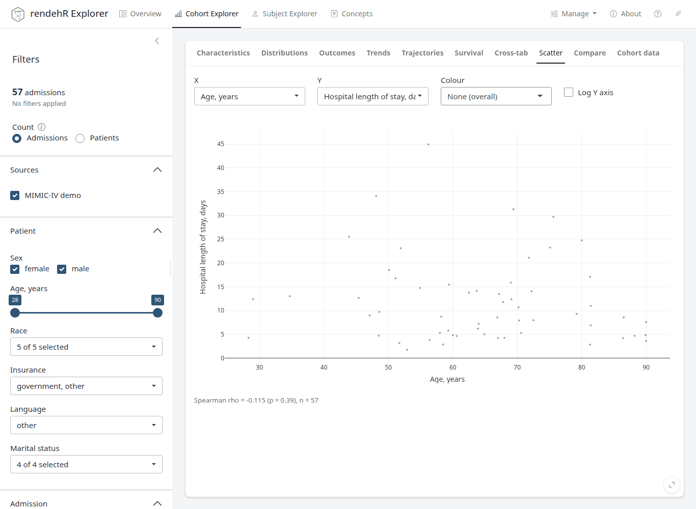
plot of chunk cohort-scatter
Two continuous variables, coloured by a group, with an optional log Y axis and the Spearman correlation underneath. Each point is one admission; above 8,000 admissions a random 8,000 are plotted, while the correlation uses all of them.
Compare
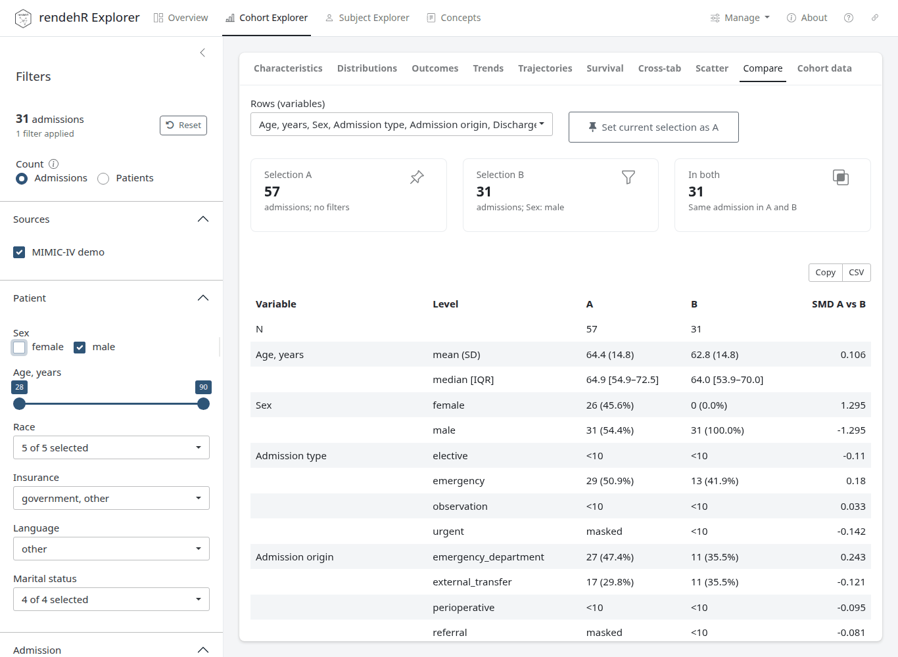
plot of chunk cohort-compare
Two selections made with the same filters side by side. Set the filters for the first group and press Set current selection as A; then change the filters, and the current selection is B. The boxes give the size of each and how many admissions are in both; the table compares A with B (SMD A vs B), followed by each binary outcome with its 95% Wilson interval. An admission in both selections is counted in both columns.
Subject Explorer
One patient at a time. The sidebar narrows the candidate list
(source, has an ICU stay, more than one admission, died in hospital, age
at the index admission, admission type), then Load opens the
patient typed in Patient and Random picks one that
matches. Time series via chooses where values are read from:
the per-source harmonized tables (get_patient_ts()) or the
merged schema; the two must agree, and the Verify tab checks that they
do. When a patient has several admissions, the admission selector
switches between them.
Timeline
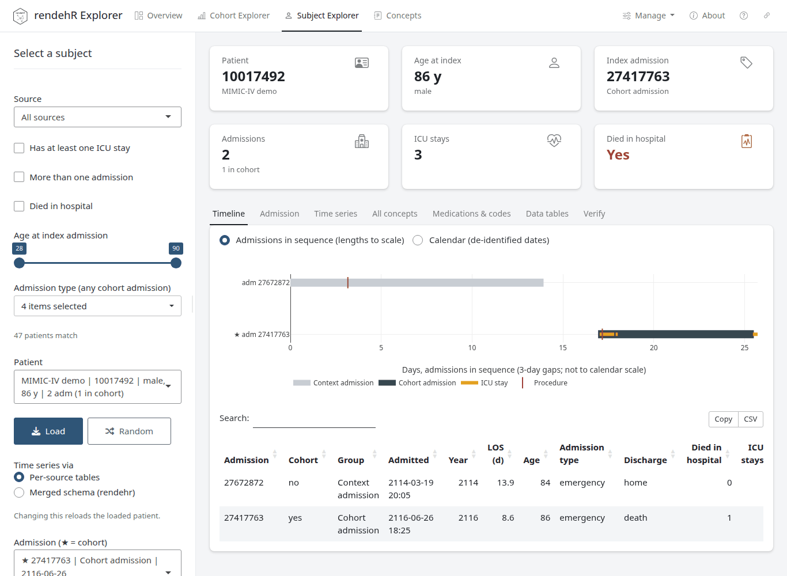
plot of chunk subject-timeline
Every admission of the patient, cohort and context, either in sequence with lengths to scale or on the de-identified calendar, with ICU stays marked. Procedures with a time are ticked on the timeline: eICU-CRD treatment offsets and MIMIC-IV procedure dates (placed at the start of the day); MIMIC-III records no procedure times. The table below lists admission and discharge times, length of stay, ICU stays and outcome.
Admission
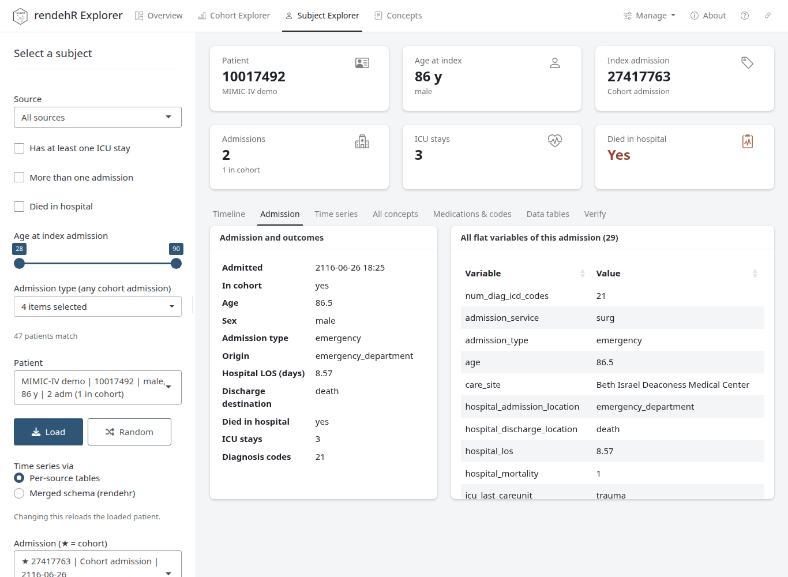
plot of chunk subject-admission
The selected admission: demographics, admission type and origin,
outcomes and every flat variable (get_patient_flat()) with
its value.
Time series
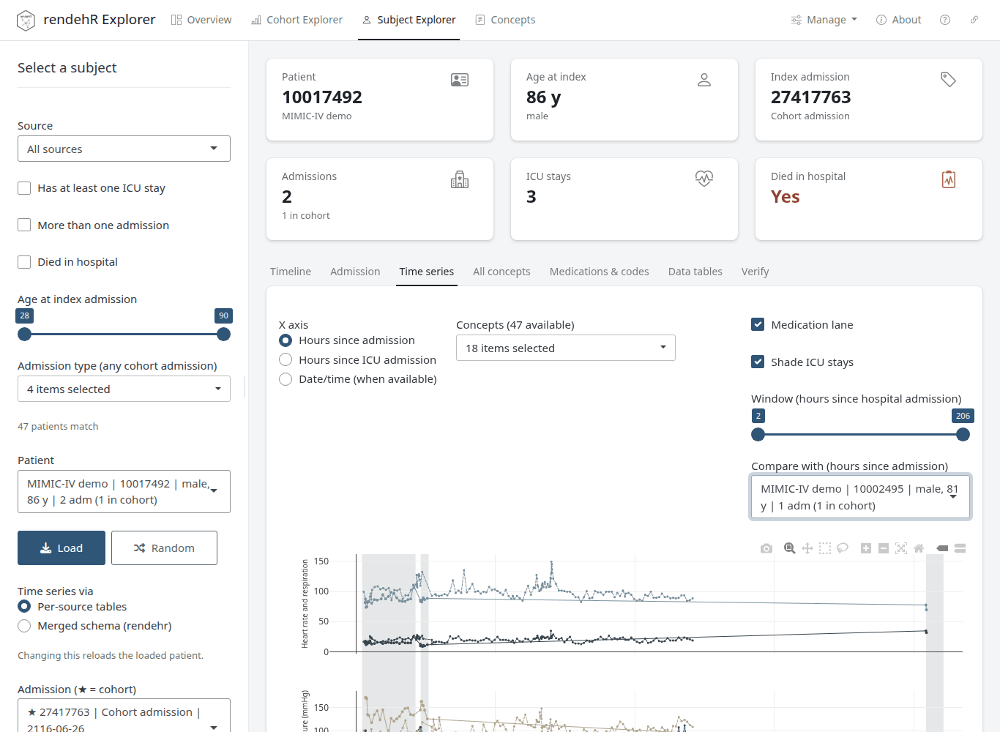
plot of chunk subject-timeseries
Chosen concepts on a shared time axis, in hours since hospital or ICU
admission, or on the shifted date. A medication lane under the plots
shows the duration exposures from the merged dur table, and
ICU stays are shaded. The window slider zooms in on part of the stay.
This is the view to check a concept against the clinical story, for
example that vasopressors start when the mean arterial pressure
falls.
Click a point to see where it comes from: the value and its time, the concept’s definition for that source (table, item codes, unit and conversion from the concept configuration) and its registered origin. Compare with draws a second patient’s values of the same concepts as dashed lines on the same panels (hours since admission), for example a patient with the same diagnosis who did not deteriorate.
All concepts
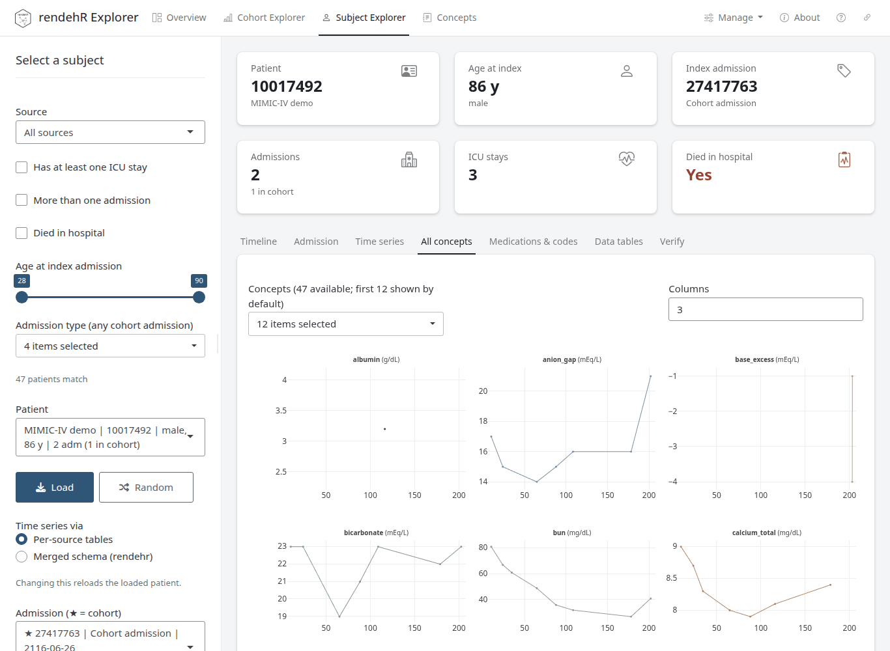
plot of chunk subject-allconcepts
A grid of small plots, one per concept the admission has, with a chosen number of columns. Useful to see at a glance what was recorded and to find a concept with implausible values.
Medications & codes
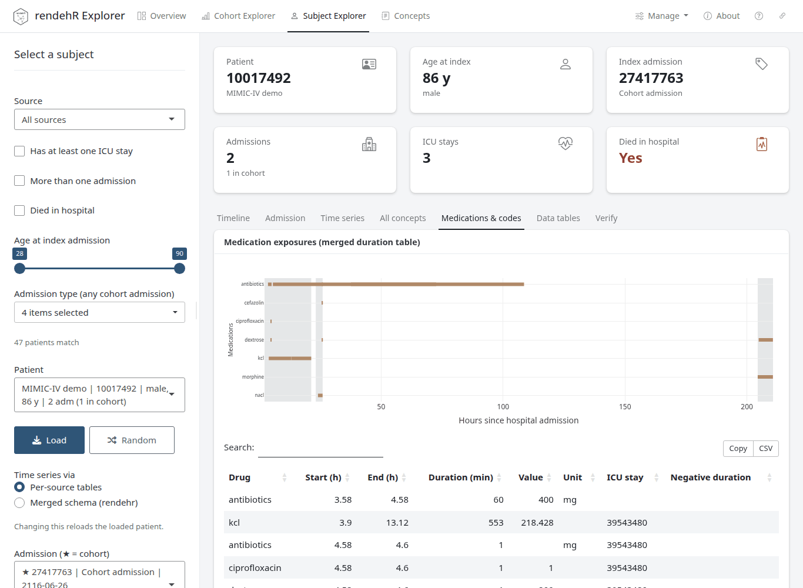
plot of chunk subject-meds
Medication exposures as bars over time with their start, stop and dose, followed by the diagnosis and procedure codes of the admission with their titles.
Data tables
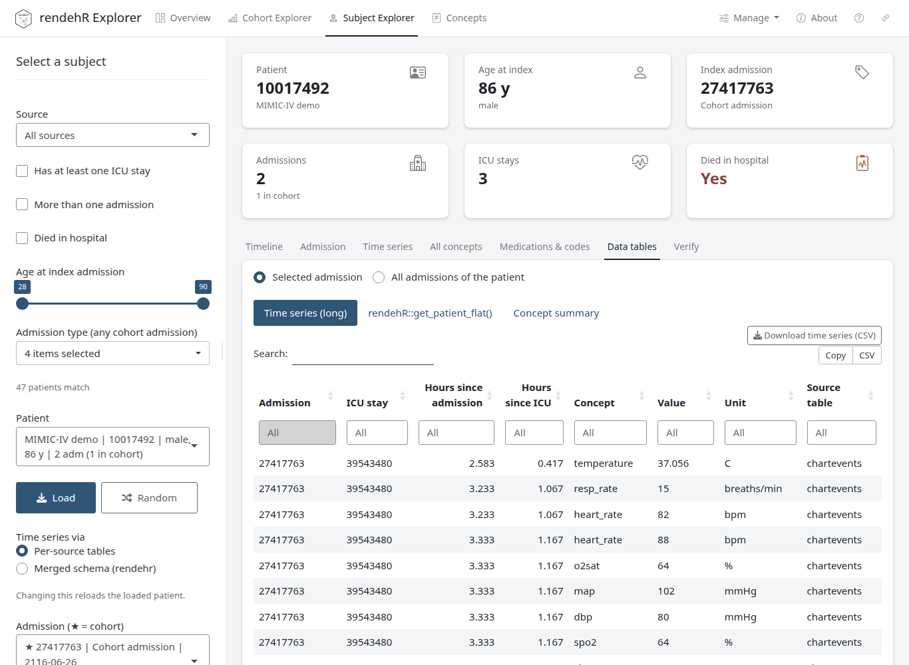
plot of chunk subject-datatables
The raw material behind the plots, for the selected admission or all
admissions of the patient: the long time-series table (downloadable as
CSV), the output of get_patient_flat(), and a per-concept
summary (rows, rows with a value, min, median, max, first and last hour,
unit).
Verify
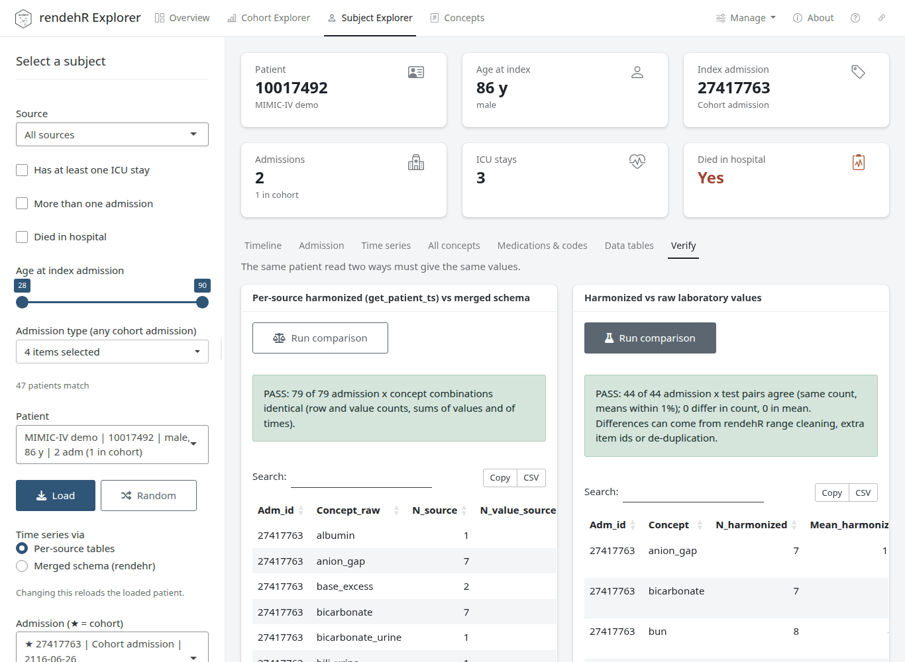
plot of chunk subject-verify
The same patient read two ways must give the same values.
- Per-source harmonized vs merged schema compares every time-series row of the patient in the source schema with the merged schema.
-
Harmonized vs raw laboratory values reads the source’s raw
laboratory file (needs
raw_dirs) and compares it with the harmonized values after unit conversion. - Structural checks confirm that identifiers, admission windows and ICU stays of this patient are consistent across tables.
A mismatch here points at a merge or a concept definition, not at the patient.
Concepts
Concept inventory
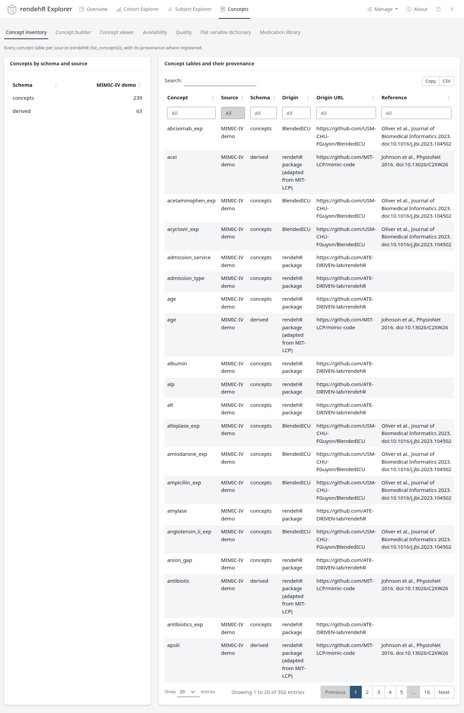
plot of chunk concepts-inventory
Every concept table per source (list_concepts()),
counted by schema, with its provenance where registered: the definition
file, row and code that produced it.
Concept builder
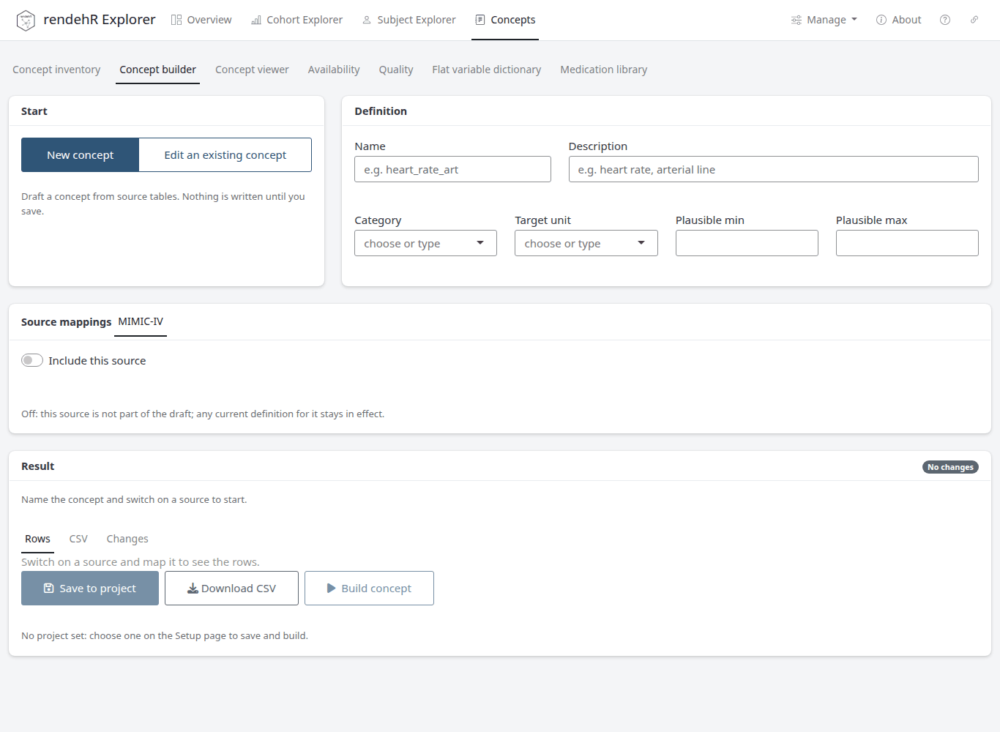
plot of chunk concepts-builder
Drafts a new time-series concept without writing SQL. Start from a
source table and its item dictionary, search items by label or pattern,
choose the value and unit columns, unit conversion and plausible range,
then preview the result against the database inside a read-only
transaction: rows, distribution and the CSV row that would be saved.
Save writes a user_concepts file that
run_concepts() picks up; nothing is written to the clinical
tables. The command-line equivalent is in
vignette("concepts").
Concept viewer
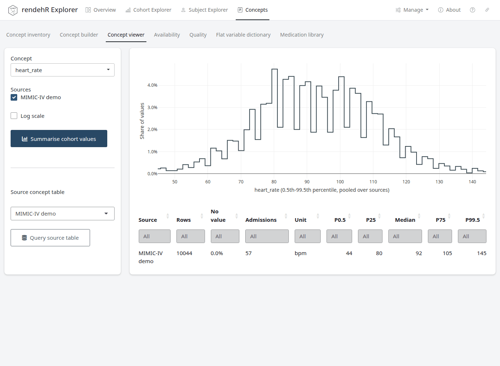
plot of chunk concepts-viewer
The distribution of one concept across sources for the cohort admissions, with n, missing and quantiles per source (Summarise cohort values), and a direct look at the source concept table (Query source table). Different distributions across sources are the usual sign of a unit or item-selection difference.
Availability
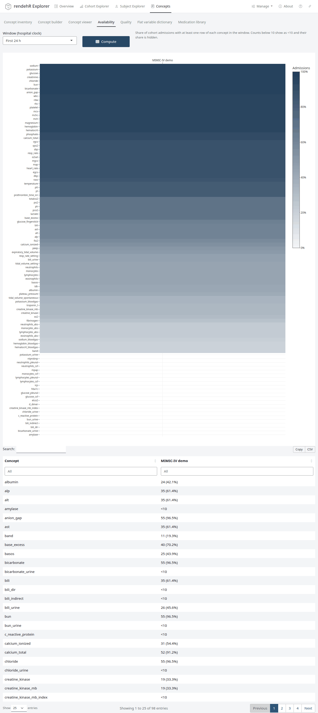
plot of chunk concepts-availability
Which concepts a cohort actually has: the share of cohort admissions with at least one value of each concept in the first 24 or 48 hours of the hospital stay or over the whole stay, as a heatmap of concepts by source and as a table. It answers whether there is enough data for a variable before a study relies on it, and shows where sources differ in what they record.
Quality
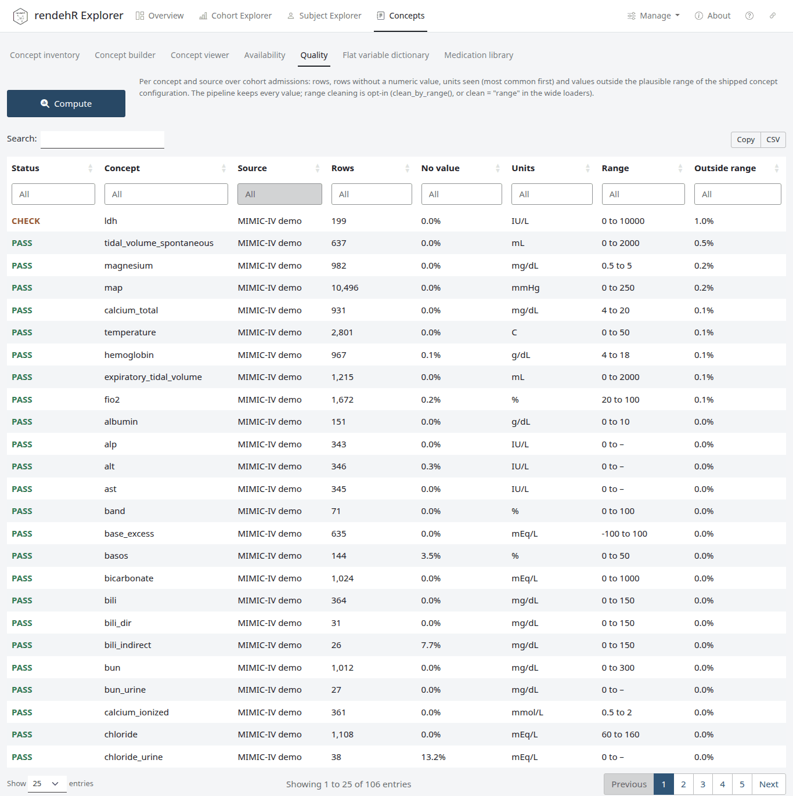
plot of chunk concepts-quality
Per concept and source over the cohort admissions: rows, the share of
rows without a numeric value, the units seen (most common first) and the
share of values outside the concept’s plausible range from the concept
configuration, sorted by that share. CHECK marks more than 1%
out of range or more than one unit. The pipeline keeps every value;
range cleaning is opt-in (clean_by_range(), or
clean = "range" in the wide loaders, see
vignette("harmonized-data")).
Flat variable dictionary and medication library
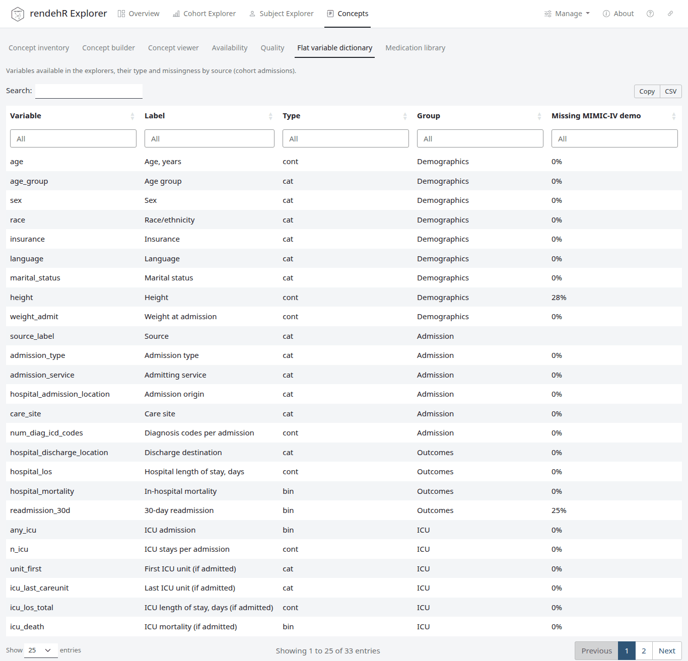
plot of chunk concepts-dictionary
The dictionary lists every variable the explorers can filter or plot, its type and its missingness per source. The medication library gives the prevalence of each exposure concept among cohort admissions, per source and as a top-25 chart. Exposure by day follows chosen drugs over the first 7 or 14 days: the share of cohort admissions exposed on each day since hospital admission, one panel per source.
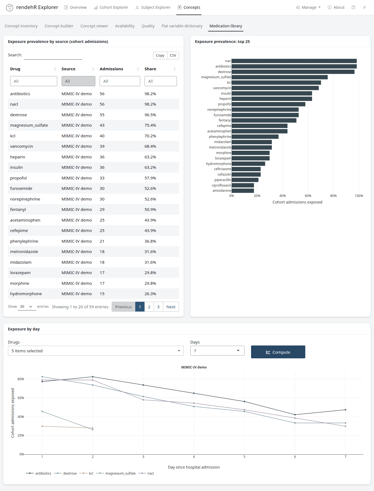
plot of chunk concepts-medications
Manage
The pages under Manage administer projects and databases. They are the only part of the app that changes anything, and only when you start a job; jobs run in the background with a live log, and can be cancelled.
Cohorts
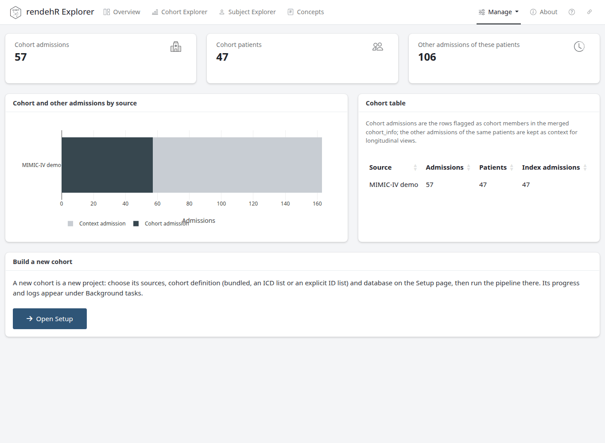
plot of chunk manage-cohorts
Cohort admissions, cohort patients and the other admissions of these patients per source, and the cohort table. A new cohort is a new project; Build a new cohort opens Setup with the cohort section ready.
Setup
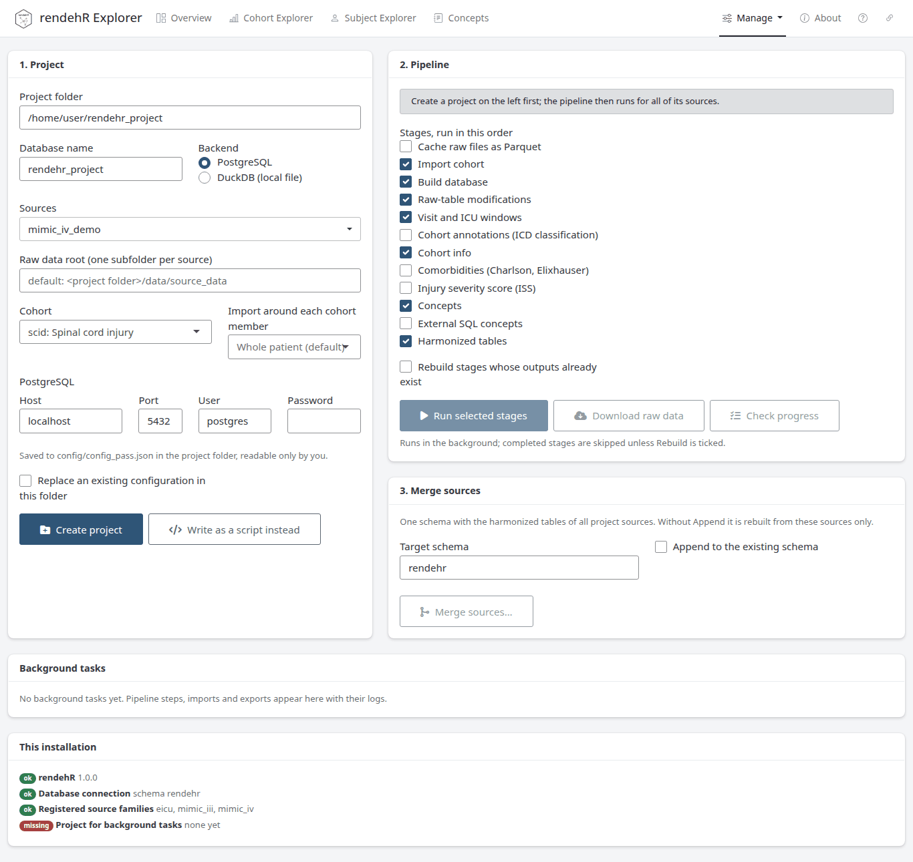
plot of chunk manage-setup
The pipeline without code, in three steps.
-
Project: folder, database name and backend
(PostgreSQL or a local DuckDB file), sources and raw-data root, the
cohort (bundled definition, ICD list or identifier list) and how much
context to import around each member (whole patient, hospital admission
or ICU stay). Credentials are saved to
config/config_pass.json, readable only by you. Write as a script instead produces the equivalent R script. - Pipeline: download raw data (credentialed sources need a PhysioNet account) and run the selected stages. Completed stages are skipped unless Rebuild is ticked.
- Merge sources: build one schema with the harmonized tables of all project sources, or append to an existing one.
Package
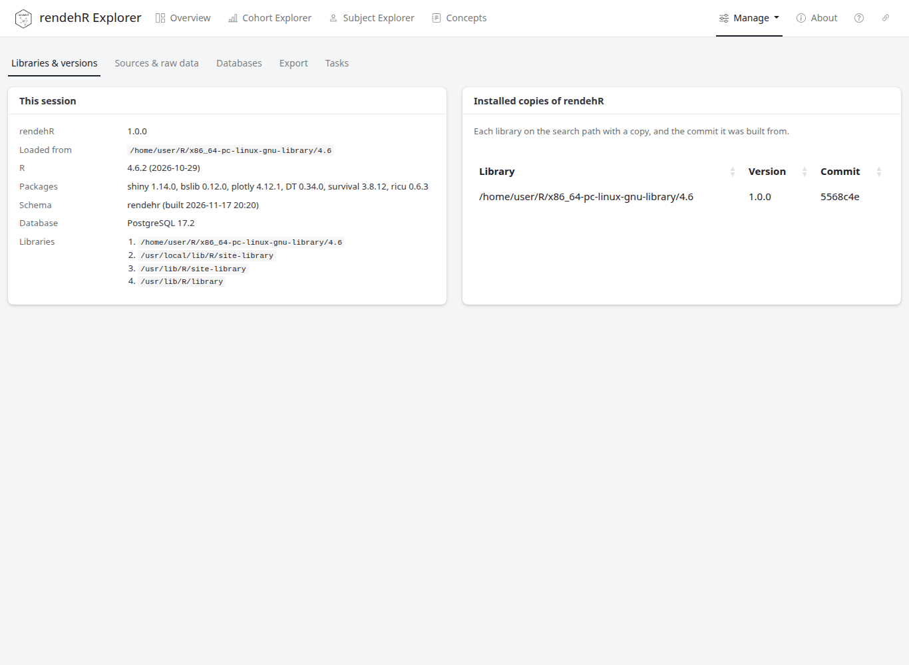
plot of chunk manage-package
Which rendehR copies are installed and from which commit; the
registered source families and whether their raw files and harmonized
tables are present; the rendehr* databases on the server
(create or drop, never the connected one); and an export of any merged
table to Parquet or compressed CSV.
Data checks
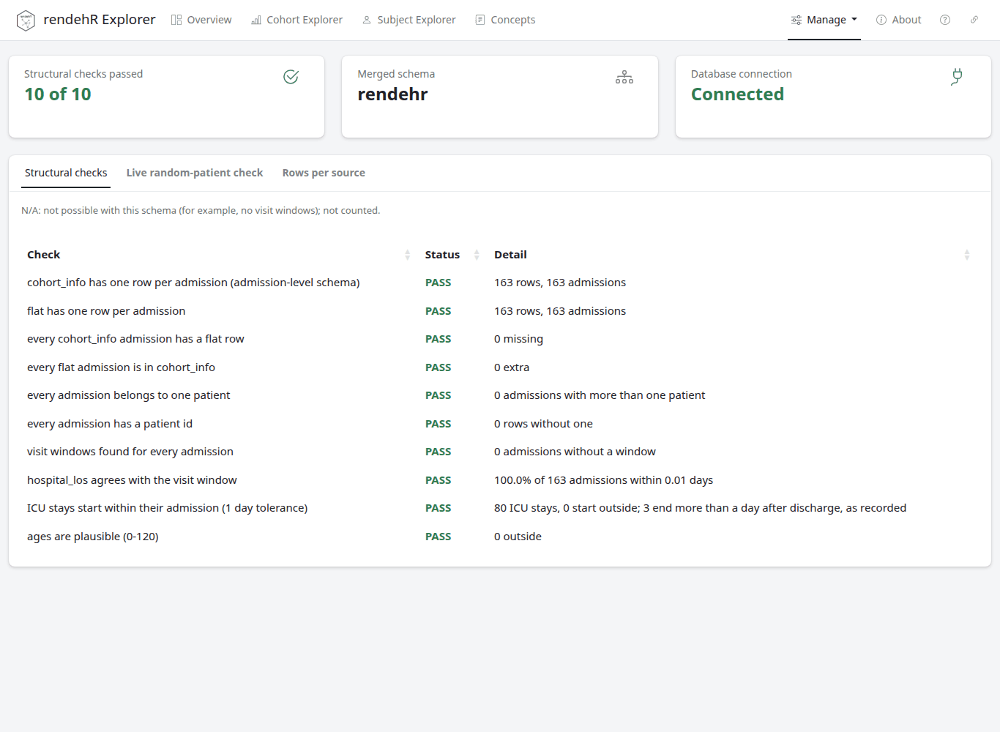
plot of chunk manage-checks
Structural checks of the merged schema (keys, windows, time ordering, coverage), rows of each merged table per source, and a live check that reads random patients from the per-source tables and from the merged schema and requires identical values. A check that cannot apply to this schema is N/A and is not counted.
Study pages
sci <- explorer_sci_data("analysis/outputs/explorer_data", "analysis/outputs")
run_explorer("rendehr", db_name = "rendehr", sci = sci)explorer_sci_data() adds study-specific pages to the
same app from tables a study prepares itself; the app does not have to
be edited. The packaged reference is the spinal cord injury study:
Cohort & categories (category rules, code list and the
mapping from source to category), SCI-specific (neurological
level, completeness and complications by category) and
Biomarkers. The SCI categories follow
scid_classify(): a stay is SCI when any of its codes is a
cord code, and its trauma status comes from those codes only.
Typical workflows
Check a new build. Open Manage > Data checks and run the live check; then compare sources on Overview; then open a few random patients and run Verify.
Describe a cohort. Set filters, group Characteristics by source or outcome, read the SMDs, export the table; add Outcomes and Survival by the same group. Show R code carries the selection into an analysis script, and the link icon saves the view.
Compare two groups. Make the first selection and set it as A on Compare, change the filters for B, and read the SMDs and outcome rates; Trajectories grouped by the same variable shows how a concept evolves in each group.
Check data before a study. Availability tells whether the concepts a study needs are recorded early enough in each source; Quality flags units and out-of-range values to handle before analysis.
Investigate an outlier. Find it on Distributions or Scatter, select it on Cohort data, open it in the Subject Explorer, and read the concept on Time series against the medication lane and ICU stays.
Add a concept. Draft it in the Concept
builder, preview and save it, run run_concepts() and
merge_sources() again, and check it on the Concept
viewer.
Related articles
-
vignette("harmonized-data"): the tables the app reads -
vignette("concepts"): the concept builder’s command-line equivalent -
vignette("cohorts"): how the cohort behind the app was defined